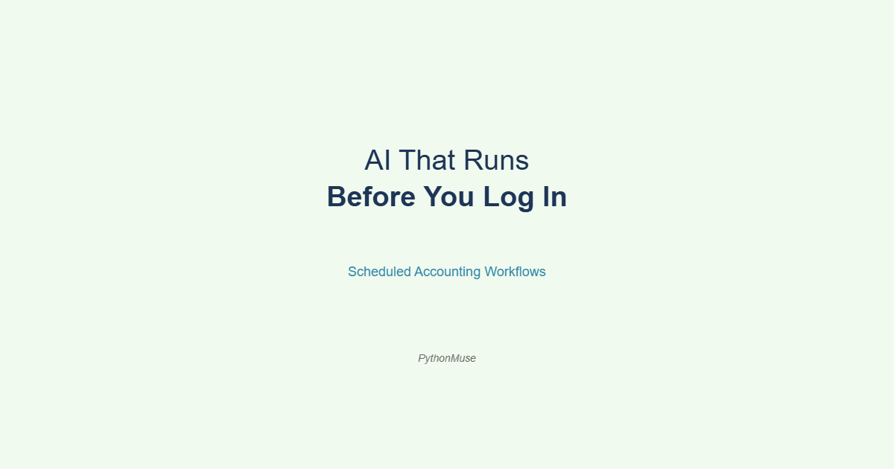
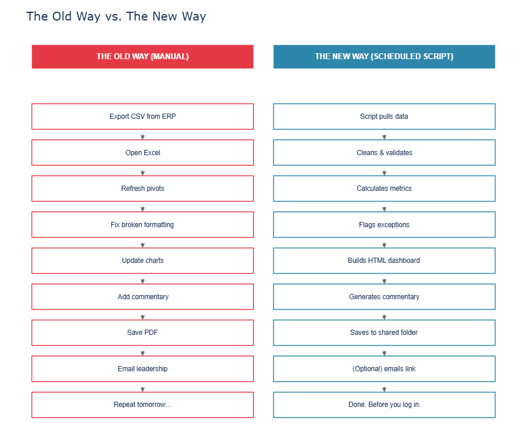
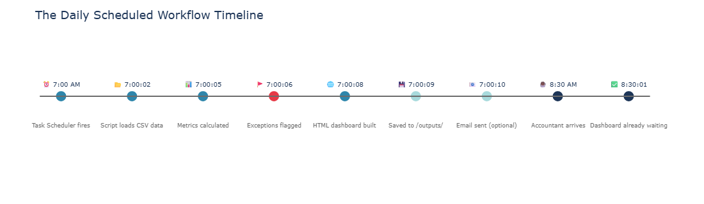

AI That Runs Before You Log In
How scheduled workflows are changing the way accountants show up to work — and what a daily sales dashboard built with AI actually looks like
PythonMuse LLC Published July 2026

🧰 A quick note on tools and framework. Everything in this article demonstrates the PythonMuse methodology — we are using Claude as the AI model, inside Visual Studio Code, through GitHub Copilot or Claude extension (by Anthropic). But the concepts here — scheduled scripts, automated dashboards, trigger-based workflows — apply to whatever AI model and environment your organization has approved. Further down, we show how the same prompts look in ChatGPT and Google Gemini. The framework travels. The interface is just a detail.
The Old Morning Routine
There was a time when "automation" in accounting meant:
- opening Excel,
- clicking Refresh All,
- waiting nervously,
- and praying nothing broke while you grabbed coffee.
If the spreadsheet opened without:
- circular reference warnings,
- broken links,
- or a mysterious tab named
FINAL_v2_USE_THIS_ONE_REAL.xlsx
...that was already considered operational excellence.
But something quietly changed. AI is no longer just helping accountants while we work. Now it can work before we log in. And honestly? That is where things start getting interesting.
The Shift Nobody Is Talking About
Most AI discussions in accounting still focus on prompt engineering.
"Ask AI to summarize this." "Ask AI to explain a variance." "Ask AI to build a formula."
Useful? Absolutely. But the real leap happens when accountants realize:
AI workflows can run on schedules.
Meaning:
- every morning,
- every Monday,
- every month-end,
- or whenever a trigger (e.g., a new file lands in a shared folder) fires —
...the workflow wakes up and does the work automatically.
No one opening Excel. No one copying tabs. No one manually rebuilding dashboards for the 47th time this quarter.
Your accounting workflow becomes something closer to a night-shift analyst that never sleeps, never asks for PTO, and never accidentally overwrites the master tab.
The Old Dashboard Life
Let's be honest about what daily reporting often looks like today.
The Traditional Workflow:
- Export CSV from ERP
- Open Excel
- Refresh pivots
- Fix broken formatting
- Update charts
- Add commentary
- Save PDF
- Email leadership
- Repeat tomorrow and forever until retirement
Half the process is not even analysis. It is surviving the process itself. And if someone asks:
"Can we add a filter by region?"
Congratulations. You just inherited another permanent spreadsheet responsibility.
The New Workflow
Now imagine this instead.
At 7:00 AM every weekday:
- A Python script runs automatically
- Pulls yesterday's sales and service data
- Cleans and validates it
- Flags unusual transactions
- Builds an interactive dashboard with sorting and filtering
- Generates commentary
- Saves the dashboard to a shared folder
- Optionally emails the team a link
Before accounting even logs in. That is not science fiction. That is literally a scheduled script.
And the AI can help you build it — with prompts you could write today.
New to scripts or Python? A script is just a written set of instructions a computer follows automatically — the same idea as an SOP, but for a machine — and Python is the plain, readable language most of these scripts are written in. What the Heck Is a Script? and Python Without Intimidation cover both concepts in plain accounting language before you go further.
"Wait… Dashboards Can Leave Excel?"
Yes!
This is one of the biggest mindset shifts accountants are about to experience. For years we treated Excel as:
- the database,
- the dashboard,
- the workflow engine,
- the reporting tool,
- the reconciliation layer,
- and emotional support system.
To be clear: Excel isn't the problem, and it isn't going anywhere. It's still great for quick analysis, pivot tables, and one-off numbers. The problem is asking it to also be your database, your dashboard, and your scheduler — jobs it was never built for.
But modern dashboards can be auto-generated as interactive web pages, with your live data ready for analysis. This uses HTML — which, like Python, AI can help generate to your specifications.
Meaning: filters, dropdowns, slicers, charts, commentary, and interactive visuals — all inside a browser window.
No broken formulas. No hidden columns. No "don't touch the yellow cells."

The Demo: Daily Sales & Service Dashboard
Inside the PythonMuse Workflow Kit, we built a practical example to demonstrate.
Step 1 — Load the Data
The workflow starts by loading sample CSV files:
import pandas as pd
from pathlib import Path
DATA_DIR = Path(__file__).parent.parent / "data"
sales_df = pd.read_csv(DATA_DIR / "daily_sales.csv", parse_dates=["date"])
service_df = pd.read_csv(DATA_DIR / "service_calls.csv", parse_dates=["date"])
Using real data? Swap in masked or anonymized data before connecting this to your ERP — never load real client data into a script (or an AI tool) without checking your organization's data governance policy first. More on this in the Governance section below.
The CSVs are the training wheels. Here is what the SQL upgrade looks like when you are ready:
# SQL version — swap these in when you're ready to connect to your database
# from sqlalchemy import create_engine
# engine = create_engine("mssql+pyodbc://server/database?driver=ODBC+Driver+17+for+SQL+Server")
# sales_df = pd.read_sql("SELECT * FROM daily_sales WHERE sale_date = CAST(GETDATE()-1 AS DATE)", engine)
# service_df = pd.read_sql("SELECT * FROM service_calls WHERE call_date = CAST(GETDATE()-1 AS DATE)", engine)
CSV first. SQL when the bike needs to go faster.
Step 2 — Analyze the Data
The script calculates what accountants already look at every morning:
- revenue by branch vs. target
- gross margin by category
- service call volume by priority
- exception flags (revenue below 70% of target, open emergency calls)
- dynamic commentary
yesterday = sales_df["date"].max()
daily = sales_df[sales_df["date"] == yesterday].copy()
daily["gross_margin"] = (daily["revenue"] - daily["cost"]) / daily["revenue"]
daily["vs_target_pct"] = (daily["revenue"] - daily["target_revenue"]) / daily["target_revenue"]
# Flag exceptions: branches more than 15% below target
exceptions = daily[daily["vs_target_pct"] < -0.15]
Exactly the same logic accountants use today. The difference is the workflow remembers how to do it tomorrow.
Step 3 — Build the Interactive Dashboard
Using Plotly, the script generates an HTML file with interactive charts:
import plotly.express as px
import plotly.graph_objects as go
fig = px.bar(
branch_summary,
x="branch",
y=["revenue", "target_revenue"],
barmode="group",
title=f"Revenue vs. Target by Branch — {yesterday.strftime('%B %d, %Y')}",
color_discrete_map={"revenue": "#2E86AB", "target_revenue": "#A8DADC"}
)
And yes — the script generates commentary automatically:
top_branch = branch_summary.loc[branch_summary["revenue"].idxmax(), "branch"]
total_revenue = branch_summary["revenue"].sum()
total_target = branch_summary["target_revenue"].sum()
vs_target = (total_revenue - total_target) / total_target * 100
commentary = (
f"Total revenue of ${total_revenue:,.0f} was "
f"{'above' if vs_target > 0 else 'below'} target by {abs(vs_target):.1f}%, "
f"led by the {top_branch} branch."
)
Five years ago that sentence alone would have sounded like a product demo. Now it is just a few lines of Python code.
Step 4 — Schedule the Workflow
This is where the magic happens.
Windows Task Scheduler (most accountants already have this and never knew it):
- Open Task Scheduler (Start menu → search "Task Scheduler") → Create Basic Task
- Set trigger: Daily, 7:00 AM, weekdays only
- Action: Start a program →
python - Arguments:
C:\path\to\run_scheduled_dashboard.py
Mac (cron) (no IT ticket required — built into every Mac):
- Open Terminal → run
crontab -e - Add a line:
0 7 * * 1-5 /usr/bin/python3 /path/to/run_scheduled_dashboard.py - Save and exit (
:wqif using vim)
Done. The workflow now runs before coffee.

📋 For IT and governance teams:
run_scheduled_dashboard.pyin the Workflow Kit includes ready-to-adapt examples for Windows Task Scheduler, GitHub Actions, and Linux/Mac cron, with logging built in. See the scheduled-dashboard skill for the governance checklist.
"But Isn't This IT Stuff?"
A little.
But so was Excel once. There was also a time when:
- pivot tables looked terrifying,
- VLOOKUP users were considered sorcerers,
- and macros were whispered about like forbidden magic.
Accounting professionals adapt faster than we realize.
The difference now: AI dramatically lowers the technical barrier.
You no longer need to know how to build everything from scratch. You need to know:
- how workflows fit together,
- how to review outputs,
- how to add controls,
- and how to think structurally.
That is a much more achievable learning curve than most people think.
The Governance Part (Yes, We Have to Talk About It)
⚠️ Important reality check. None of this removes the need for accounting judgment. It actually increases the importance of governance.
Every scheduled workflow needs:
| Requirement | What It Looks Like in Practice |
|---|---|
| Approved logic | Documented calculation rules, reviewed by a senior accountant |
| Testing | Run against historical data before going live |
| Exception handling | What happens if the CSV is missing or empty? |
| Run logs | Timestamped record of every execution and output |
| Human review | Someone checks the dashboard before leadership sees it |
| Auditability | Can you reproduce exactly what ran on a given date? |
The accountant does not disappear. The repetitive manual process does.
And honestly? Most accountants would happily trade "copying tabs into PowerPoint at 10 PM" for higher-value review and analysis work.
🔒 Data safety reminder. This demo uses sample data. Before connecting a scheduled workflow to real company data, review your organization's AI and data governance policies. See: How to Use AI Without Sending the Wrong Data →
The Bigger Shift
This article is not really about dashboards. It is about a change in mindset. Most accountants still think:
"How can AI help me do this task?"
The next level is:
"How can this workflow run without me manually starting it?"
That is a completely different way of thinking. And once you see it happen once — dashboard waiting in your folder at 7:01 AM — it becomes very hard to go back to manually refreshing spreadsheets and hoping Excel behaves.
Ready to Wow Your Boss?
Here is your starting point.
This week:
- Download the PythonMuse Workflow Kit
- Run build_daily_dashboard.py against the sample data in /data/
- Open outputs/daily_dashboard/dashboard.html in your browser (double-click the file — it opens like any web page, no server or install required)
- Show someone what an AI-generated dashboard looks like
Next week: - Replace the sample CSV with real (masked or anonymized) data from your ERP - Tweak the commentary logic for your business context - Schedule it with Windows Task Scheduler
The week after: - Your dashboard is waiting for you when you arrive - Your colleagues are asking how you did it - Your boss thinks you are a wizard
You don't need to code and write this from scratch. You knew how to describe the problem clearly, how to review the output responsibly, and how to connect the workflow to something that runs itself.
That is the skill.
The accountants who learn to build workflows like this — even imperfect, even small ones — will feel very different from those still manually refreshing spreadsheets every morning hoping Excel behaves itself.
How This Looks in Other AI Tools
🌐 Framework reminder. We built this workflow using Claude inside VS Code via GitHub Copilot or Claude extension by Antropic. But every major AI tool can help you build the same thing. The prompts are nearly identical — the output varies slightly by tool, but the logic is the same.
Here is the starting prompt we used:
"I want to build a Python script that loads a CSV of daily sales data, cleans and validates it (handles missing values, duplicate rows, and type conversions), calculates revenue vs. target by branch, flags exceptions, and saves an interactive HTML dashboard using Plotly. Use pandas and include comments showing where I could replace the CSV load with a SQL query later."
In GitHub Copilot (VS Code): Paste the prompt into the Copilot Chat panel. It will read your workspace context, follow your CLAUDE.md rules, and generate code directly in your project.
In ChatGPT: Paste the same prompt at chatgpt.com. Attach your CSV file for context. It will generate the script — copy it into your project folder.
In Google Gemini: Same prompt at gemini.google.com. Gemini handles Python and Plotly well. Download the generated script to your project.
In Microsoft Copilot (M365): Available in some enterprise plans. Prompt behavior is similar — check your organization's approved use policy first.
The framework is the same everywhere:
- Describe your workflow clearly
- Provide sample data for context
- Ask for code broken into clear steps, with notes explaining each one
- Review before running
- Iterate with follow-up prompts
The tool is just the interface. The thinking is yours.
Related Articles
- From One-Time Analysis to Repeatable Workflows — the nine-step pattern for turning a one-off task into a script that runs reliably
- The Power of Skills and Agents — how to build reusable AI workflows beyond one-time prompts
- AI Routines for Accountants — take the scheduled-script idea further with skills, routines, and a human-approval evidence trail
- Your First CLAUDE.md — how to give your AI a standing set of rules for your accounting environment
PythonMuse Workflow Kit
The full demo for this article — sample data, scripts, skills, and scheduling instructions — lives in the PythonMuse Workflow Kit:
pythonmuse-workflow-kit/
data/raw/
daily_sales.csv
service_calls.csv
src/
build_daily_dashboard.py
run_scheduled_dashboard.py
skills/
scheduled-dashboard/
SKILL.md
outputs/
daily_dashboard/
Clone it. Run it. Modify it. That is the whole point.
Published by PythonMuse LLC | GitHub